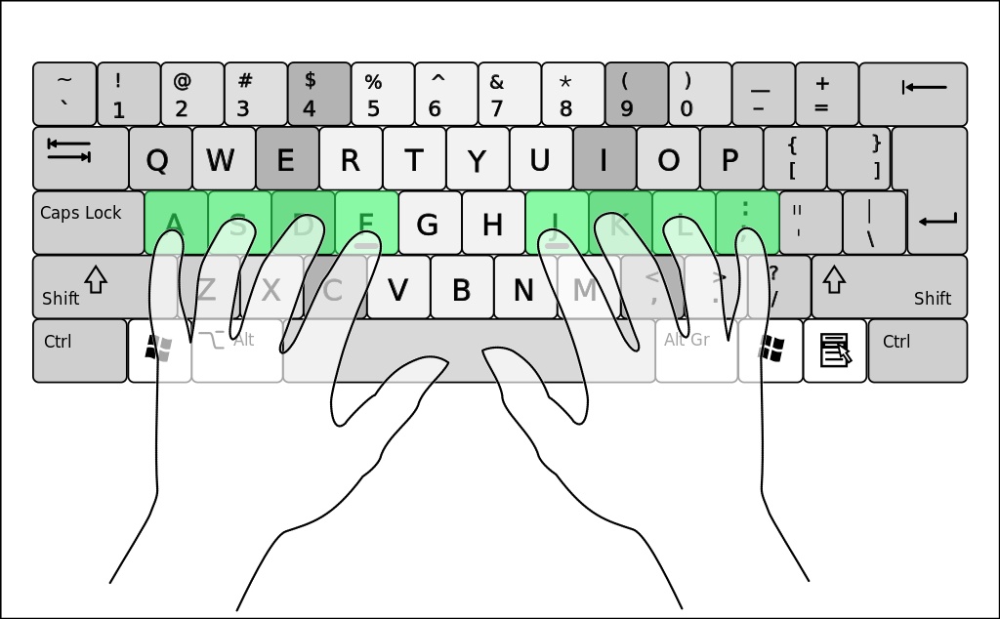
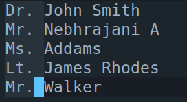

Why Emacs?
For anybody who spends a large part of their day talking to a computer, the dynamics of this interaction become incredibly important: everything from posture to software tools. This isn't something specific to programmers. In many cultures, swordsmen were taught that mastery is achieved when the sword feels like an extension of the body. Or, if you're looking for something more modern, see Harry Potter's search for the 'just right' wand when he first visited Diagon Alley.
The perfect marriage between a tool and its wielder involves only two things:
- The skill of the wielder, and
- The qualities of the tool.
In general, the former takes an incredible amount of effort, so most people who are learning an art seriously focus far more on it. This leaves the latter to be discussed only by either the posers who assume that buying the same golf club Tiger Woods uses gives them the same level of skill, or the designers of the tool themselves. All is well and good with the world.
For the moment, consider the case of a blacksmith making a perfect hammer for himself. In this case, the blacksmith is both the wielder and the designer of the tool, meaning that he can design this tool to be precisely right for him. Unlike the general designer of a hammer, he doesn't have to worry about whether the tool is good for ten thousand people, and unlike the general wielder, he can build the tool to work around his own inadequacies in skill.
A programmer using a program to accomplish a task is in precisely the same position as this blacksmith. He has the skills to forge his own tool, to make something perfectly suited to himself. Why doesn't this happen then?
Well, duplicated effort, low quality, and low return on investment. If everybody wrote their own web browser, the end result would be a bunch of really bad programs and a huge time loss for all parties involved. Everybody compromises a little bit to have a few stable, large projects with features everyone wants, and possibly, a few plugins for people to change the behaviour slightly, to taste. Of course, these plugins don't provide a feature \(X\) as well as the program having it natively, but oh well, such is life. Everybody needs to compromise a little, and anyway, people have better things to do than fight with an ugly plugin API.
However, I posit that what these large programs get right is that a central base with sensible defaults and simple features is useful — however, their method of providing customisation to the user (a plugin interface or something of the sort) isn't an instance of good design in the special case where your user (wielder) base is mostly programmers.
In this article, we explore what goes into making a really good text editor, and why that editor is Emacs.
1 Text Editors in History
A program that is able to open a file from disk, change a few
characters, and write it back to disk, is a text editor. This is a
deceptively simple description — indeed, UNIX's ed, a line
editor, fulfills all these criteria. Programmers use text editors to
edit files called programs, that are written in human-readable
languages. Sometimes, programmers have to write in English as well.
This is when text editors with extra features become more useful —
things like:
- Visual mode: Instead of being able to only edit a line (or other unit) at a time, the whole file can be viewed in a sort of 'buffer' and moved around in.
- Better movement: Moving around faster over walls of text.
- Syntax and spell checking: Tells the programmer where errors are and makes them easy to correct.
- Syntax highlighting: certain keywords are highlighted in different colors to make reading easier.
- Multiple files open at the same time.
- Support for a bunch of different languages, scripts, and locales.
- \(\cdots\)
Sometimes, even features like debuggers and version control systems are integrated into text editors, creating what is called an Integrated Development Environment (IDE).1
I'm sure you'll now see the parallel with web browsers. Different people want different things from text editors, and instead of writing their own editors, people compromise a little and use a text editor with sensible defaults. However, the big difference between the two cases is the user base — rather than the casual computer user, the user base for programming-y text editors is programmers. There must be a better way to reconcile the stability of a large, popular project with the level of customisation and access programmers can utilize to make the tool better, rather than an ugly plugin system.
1.1 Notable Text Editors
The following are some of the text editors we'll discuss in this
post. If I missed your favourite text editor, forgive me, this page
has limited space. Text editors that can be run in the terminal are
written with their command names (like vi).
ed: UNIX's original line text editor, also a part of the POSIX standard. Nobody really uses it as a full time editor anymore.vi: A screen editor, modal in nature. Default on all POSIX-compliant systems, so it's worth learning.vim: A port ofviwith many extensions. Extremely widely used. Many *nix systems actually run vim when the user callsvi. Have a major war withemacsusers.nano: A simple, Notepad-like editor for the terminal.emacs: The other big UNIX editor, focused on extensibility. GNU Emacs is the most widely used fork. Have a major war withvi/vimusers.- Notepad and its clones: Simple GUI-only text editors. Can't do much with these.
- Sublime Text: An editor that was very popular a few years ago. Python-based plugin API for customisation.
- Atom: An editor developed by GitHub, designed to be 'hackable'. Extension and package creation language: JavaScript, since it ran on top of a web browser (Electron framework).
- Visual Studio Code: Currently the most popular editor in the world. Runs on top of a web browser (Electron), and uses JavaScript for extension.
Now, instead of discussing these one by one, we'll pick up certain common design principles between these editors and reason about which ones are desirable.
1.2 Platforms
Generally, editors are written as a single big program (often in C),
that has all editor features and functions, and is compiled and
distributed. vi, nano, vim, and a few others follow this simple
model.
An alternative to this model is what many modern text editors (and in fact many other applications do), is implement a browser core and rendering engine, then write an application on top of it using JavaScript or some other web technology. This has the tremendous advantage of having a powerful scripting language that can be used to change application properties on the fly. It also means that the same application can be run as a web application hosted on some website. VS Code and Atom use this model.
The final alternative is to implement a core that’s actually an
interpreter for a scripting language which is used to program an
editor. This is similar to the web browser model in that the
application properties can be changed on the fly, but different in
that the core doesn’t have to be as heavy and complicated as web
browsers. The core can be lightweight, run without a GUI, and most
importantly, doesn’t have to be in JavaScript and limited by what the
web standard may or may not allow. This is emacs' model.
An ideal editor uses the core and extension language model, because this maximises extensibility without the explicit need for a plugin interface or (God forbid) recompilation.
1.3 Interfaces
Editors can be TUI-only (nano), GUI-only (Atom, VS Code), or both.
TUI-only editors tend to not have fancy icons and support for certain
fonts and symbols, while GUI-only editors are useless on a system that
only provides a terminal interface.
A good editor provides both without any loss of feature in either,
beyond actual limitations enforced by a terminal. emacs does this.
vim has a GUI, but it’s a different program called gvim. Most
modern editors only have GUI support.
1.4 Keyboard or Mouse-Driven
This is an interesting topic. Some editor interfaces are very clicky. This means that to get something done, you often have to click an icon or drag something from here to there. Naturally, since mice are a GUI luxury, most TUI supporting editors have only optional use of the mouse when running as a GUI.
However, this design choice is a little more complex. As any seasoned computer user knows, keyboards are the fastest and most precise way to interact with a computer. Hollywood understands this too: the master hacker is always typing, since that is the fastest way to talk to a computer when the world is going to be blown up in three minutes. Even if you aren't in a Bond film, there is more comfort associated with not having to reach for the mouse and squint at tiny icons while editing. Moreover, keyboards are more precise: consider mouse-based vs. keyboard-based selection. Mice aren't a very useful tool for text editing, but are indispensable in applications like photo editing.
Good editors, however, don't force this choices on users, especially towards the mouse side, since that slows experienced users down at the cost of newbie-friendliness. There should at least be a way to do a mouse action using a keyboard.
1.5 Complexity
This is one of the really big debates, which draws its roots from
the modular *NIX vs. monolithic Windows philosophy. In short,
proponents of simple editors claim that an editor is just another tool
among many others. An editor need not have regular expression
abilities: there’s grep for that. An editor need not have a
graphical debugger: what’s gdb for? This side uses the operating
system as the development environment, and oppose the unholy mixing of
these functions into a gigantic text editing program. [UNIX AS IDE]
The other side of the debate claims that having all these tools within one environment makes the development process faster, since there is very little context switching involved. Moreover, having a single powerful tool allows interesting interfaces between functions that would otherwise have been discrete and impossible to link together via a text stream.
Today, it seems the monolithic side has de facto won, since even
editors like vi / vim, which pride themselves on simplicity:
A student enquired of Master Wq, “When will I know I have mastered Vimscript?”
Master Wq answered, “When you never use it.”
have extensions for file browsing and auto-completion. It’s just too convenient not to have.
1.6 Modal vs. Non-Modal
Mos people today are entirely unfamiliar with modal editing as a
concept, since nearly no text editing programs have a modal
interface. A modal interface simply means that the editor has a
'normal' mode where pressing the key a (for instance) does not
insert the letter 'a', but instead performs some editor function.
To actually insert the letter, the editor must be put into 'insert'
mode, which is when pressing keys is a literal insert into the
file.
Modal interfaces may sound complicated, but, in truth, it's exactly
the same concept as a modifier key. When you hold down Ctrl, the
keyboard keys all behave differently. In this state, pressing 'f'
may execute the search function. Modal editing can simply be
thought of as putting the editor into a mode where a modifier key
is always pressed, or into a mode where you can just insert text. If
this sounds needlessly complicated, hang in there, we'll get to
discussing why it can actually be useful eventually.
For now, it is sufficient to note that the most popular modal
editor is vi, whose modal keybindings are so popular that nearly
every other editor has a way to use them, often as a plugin. The
quality of these plugins varies, and most are missing features
vital to the seasoned vi user.
1.7 Extensibility
And now, to the elephant in the room. How much should a user be able to change? How much should a user actually change?
In my opinion, a user of a text editor should never be bound by the imagination of the program's author. This means that a user should be able to use the editor to do things the author didn't even know were possible, without editing the actual program binary. This is especially important for text editors because people come up with new features all the time, most of which are useful. This level of extensibility requires an extension language.
1.7.1 Extension Language
The definition of an extension language for a text editor isn't well defined. In practice, they range from configuration files which switch certain options on and off to Turing complete dialects of Lisp, with most falling in between.
1.7.2 Packages
1.7.3 How Much Extension is Too Much?
It should be obvious by now that there seem to be two important 'parts' of a text editing experience: the actual editing of text (moving around, deleting text, etc.), and the environment setup: the pane management, file management, version control and debugger interfaces, etc. It should be obvious that most IDEs get the second part fairly correct (usually for a specific language), but they absolutely suck at raw text editing. We now examine these issues separately, trying to pick the best of the lot in each case.
2 Raw Text Editing
Broadly speaking, all editors can be divided into two categories on
the basis of raw text editing: modal and non-modal. Most people are
familiar with non-modal editing: when whatever keys you hit on the
keyboard are typed directly. If you want to call an editor function,
you hold a modifier key (like Ctrl), and the keyboard is
transformed into an editor function interface. Powerful editors with
a lot of functions, like Emacs, rely heavily on modifier keys. In
fact, Emacs uses both Ctrl and Meta (or Alt) to call editor
functions. These are often chained together to create incredibly
long bindings that'll knot your pinkies up. However, they do give
access to a lot of powerful Emacs functions right from the keyboard.
Let's call this style of editing 'key chord' based editing (to steal
a metaphor from music theory): wherein multiple keys are pressed
simultaneously to call editor functions. In fact, in Emacs, going to
the next line is done using C-n2, which calls the editor
function next-line. next-line is also bound to the down arrow
key.
The polar opposite of non-modal (key chord) editing is modal or key note-style editing. We observe that while editing text, we either:
- Insert text.
- Select text.
- Call some editor function.
That's it. vim's modal system is based on this principle: that only three main modes are really needed: an 'insert' mode in which typing letters inserts them literally, a 'visual selection' mode where a region is highlighted and can then be operated upon, and a 'normal' mode from which all editor functions are available, called by typing any key. In our previous discussion, we said modal editing can be thought of as the normal mode being one where a modifier key is always pressed. In vim's normal mode, pressing the key 'j' goes to the next line. No modifiers: you just play notes on the keyboard.
Now, it's easy to superficially argue that although key chords are sometimes painful to type, they're far simpler than having a modal editor wherein you have to keep track of which mode you're in. However, I posit that modal editing, and specifically vim's modal editing, is actually a far superior paradigm. Let's see why.
2.1 Home Row Keys
Back when vi was written, it didn't have the luxury of assuming
that all keyboards had modifier keys, or that they had exactly the
same modifier keys as the ones on some other keyboard.
Standardisation hadn't taken place yet. This also meant that all
the editor's power had to be available using keys that'd definitely
be on most keyboards: alphanumeric and punctuation. These keys are
also located on the 'home row' of all keyboards, meaning you don't
have to move your hands much for commands that could be very
different from each other.3

This also means no more Emacs pinky from hand gymnastics to press multiple keys at the same time.
2.2 Composability
Vim's keybindings form a grammar within themselves. To understand this, consider a few examples.
- Move 10 Lines Down
We know that
jin normal mode moves the cursor down by a line.10jwill move the cursor ten lines down. Move 4 Characters Back Press
4hin normal mode. Note that in normal mode:his move one character back,lis move one character forward,jis move one line down,kis move one line up.
Any vim command can be prefixed with a number \(n\) to do it \(n\) times.
- Move 3 Words Forward
A 'word' is a space-separated group of letters. To move forward by
a word, press
win normal mode. To move back by a word, pressb. To move forward 3 vim words, press3w. - Delete 3 Back-words
d3b.
This illustrates the power of vim's normal mode. It gives us super-powerful text editing capabilities, and we've only covered the very basics. Vim has a action-count-object model for composing commands, where:
- action is what to do to the object. (Ex.
d) - count is the number of objects to do action on. (Ex.
3) - object is the unit to do action on. (Ex.
w)
2.3 Mnemonics
To get into insert mode, press i. To get into visual selection
mode, press v. Go back to normal mode? Escape. To paste, press
p. Delete? Press d. Undo? u. Copy/yank? y.
Even better, when combined with each other, these mnemonics hold:
delete a word is: daw, change 5 words is c5w, transpose two
characters is xp, and so on. (x is equivalent to dl, or
deleting a single character. Unlike d, x doesn't expect an
object to act on.)
2.4 Speed
Clearly, this makes editing text fast and easy to do. Moreover,
many commands are provided for speed: 0 goes to start of line,
$ goes to end of line. gg goes to the first character of the
file, G goes to the last. 10G goes to line 10. dd deletes the
current line, yy copies it. fR goes to the next occurrence of
the character 'R'. Capitalisation of many commands causes them to
act backwards: FR goes to the previous occurrence of R. All of
these, of course, can be composed. di) deletes all text within
the current parentheses.
It should be obvious by now that vim's way of editing text is fast and intuitive, and fully justifies having different modes.
2.5 Other Good Ideas in Vim
Many of the following ideas are also implemented in Emacs, but few other editors have such powerful implementations.
2.5.1 Registers
Almost every operating system has a clipboard, a temporary space where copied text is held until it's pasted. The problem with a single clipboard, that I'm sure you've experienced, is copying some other text overwrites the previous contents of the clipboard. Ugh.
A register is precisely like a clipboard in that it's a temporary
place to hold textual data. However, here's the cool part: vim
provides around 10 default registers, and 26 registers reserved
for the user. Register 0 is the clipboard. Registers 1 to 9
are effectively a clipboard history stack: eliminating the
overwrite problem with 9 layers of redundancy. Registers a-z are
for the user to write to and read from.
Using registers is incredibly easy: "ay writes to register a,
and "ap pastes its contents. There are some more advanced ways
to use registers as well, including appending to them and treating
them as macros.
2.5.2 Macros
Let's say we have the following C program:
#include <stdio.h> int main(int argc, char *argv[]) { printf("We") printf("Didn't") printf("Start") printf("The") printf("Fire") printf("Billy") printf("Joel") return 0; }
Great. We forgot the semicolons, and the \n after each string,
because we're Python developers. The slow way to do it is to go to
every line and manually type in what we need to. If we're the cool
new kids, we'll use multiple cursors…oh wait. We can only use
multiple cursors to add semicolons to the ends of the lines, but
the location of the \n is different in every case. Vim macros to
the rescue.
A vim macro simply records all keystrokes from the start of
recording to the end and replays them. Let's record a macro a. Hit
qa. Now, 02f"i\n<Esc>A;<Esc>0jq.4 This records the keystrokes
and saves it as macro a. To replay the macro for the remaining 6
lines, run 6@a.
#include <stdio.h> int main(int argc, char *argv[]) { printf("We\n"); printf("Didn't\n"); printf("Start\n"); printf("The\n"); printf("Fire\n"); printf("Billy\n"); printf("Joel\n"); return 0; }
Note that vim even supports recursive macros. That would work by
first setting a to an empty macro: qaq. Then,
qa02f"i\n<Esc>A;<Esc>0j@aq. A single @a runs this till the
last line of the file (though this isn't what we wanted).
Recursive macros aren't used often, but are fun to write.
2.5.3 Macros are Registers
Macros are stored in registers. Many people don't know that
recording a macro is just writing keystrokes to a register. You
can in fact @ any register to interpret its contents as
keystrokes. This means you could copy a vim macro from a website
to your X clipboard and run it directly in vim (@0).
2.5.4 Rectangular Selection
Here's something the new kids on the block use multiple cursors for: rectangular selection. If we have the following file:
Dr. John Smith Mr. Nebhrajani A Ms. Addams Lt. James Rhodes Mr. Walker
And we want to delete those pesky titles, a quick way to do this
in vim is to type C-v to enable rectangular selection, then use
hjkl to select the appropriate rectangle and hit d, resulting
in:

John Smith Nebhrajani A Addams James Rhodes Walker
2.5.5 Marks
Marks are simple: they let you set a kind of bookmark at a certain
location in a file and jump back to it. Marks are set using ma
and dereferenced using `a. Mark ` is also automatically set when
you jump using G, meaning `` jumps you back to your old context.
A neat feature not many modern editors have.
2.5.6 Undo Tree
If vim didn't already have a whole bunch of killer features, here's yet another: undo trees. Let's say you type the following:
Something something other
Now we undo.
Something something
Then we type:
Something something weird
Undo this again.
Something something
Make an edit:
Something something final
It should be obvious to you that there are three branches of undo
history: the one where we typed other, one with weird, and one
with final. Most editors discard old branches of this tree and
maintain a linear undo history, but this is blatant dishonest:
such an editor is discarding edit history, possibly causing
information loss. Vim's model saves the whole tree, and at nodes
allows you to select which branch you want to explore. Neat.5
2.6 Vim Caveats
Despite vim having absolutely brilliant ideas for raw text editing, including comfortable, thoughtful key notes, it suffers from certain flaws. Many of these are due to its running in the terminal: poor support for Unicode characters, no GUI-like modeline niceness, etc. Another big issue is the extension language, Vimscript, which is ugly and hard to use. It makes implementing modern features like autocompletion and file browsers hard to implement. Moreover, the plugin API isn't very pretty either. Vim also really isn't built to do much other than pure text editing. It's not meant to be very flexible, and to its credit, it does what it's supposed to fairly well.
Of course, vim purists insist that vim is meant to be minimal, a small tool in the UNIX toolchain.6 However, for people who want more modern IDE-like features in their text editor, vim isn't the best choice.
Now, the vim community is making efforts to fix this: there's a GTK
version of vim, and the neovim project fixes a lot of issues with
vim including its plugin interface, and is a great option if you've
read this far and don't have the energy to read further.
Despite vim's problems, it's a useful and extremely powerful editor. Moreover, it'll be there on any UNIX system you encounter, so it's worth learning if only for that reason.
3 Powerful Environment
Footnotes:
In this post, we focus our attention on text editors rather than IDEs, although the distinction between the two is often blurred. I make this choice because Emacs itself is a text editor, and the IDE-like bits are all custom elisp.
C- is Ctrl-
Image credit: By Cy21 - Own work, CC BY-SA 3.0
Yeah, that looks ugly, so let's break it down. 0 goes to the
start of the line. 2f" finds the second " mark. i\n goes into
insert mode and inserts the newline. <Esc> to go back to normal
mode. A to go to the end of the line and enter insert mode. ;
inserts the semicolon. <Esc> to normal mode. Then 0j go to the start of the
line and go to the next line. Then q to end the macro. It's simple
once you get used to it.
I really wish browser back buttons supported a tree like approach too. If you know of such a plugin, let me know.
We'll argue later about minimalism vs. maximalism in text editors.